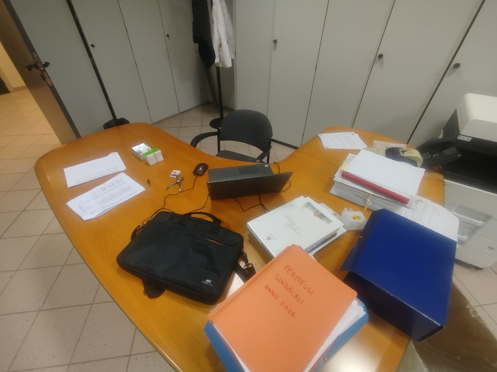

Benvenuti sul mio Report di PCTO
Questo sito web rappresenta la documentazione tecnica e il resoconto delle attività svolte durante il mio percorso di Alternanza Scuola-Lavoro (PCTO). L'esperienza si è sviluppata per la durata complessiva di 12 giorni lavorativi (pari a 86.5 ore totali) presso l'Ufficio Personale del Comune di Limbiate.
L'obiettivo di questo applicativo web è mostrare come le competenze informatiche e metodologiche apprese nel corso di studi di Informatica e TPSIT siano state applicate in un contesto aziendale reale, focalizzandosi sulla dematerializzazione dei dati, l'analisi statistica su fogli di calcolo e l'utilizzo di sistemi informativi complessi della Pubblica Amministrazione.
La mia esperienza
